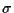

| Verbesserung, Synonym für die Eigenschaft, daß EA i.d.R. initial gegebene Zustände verbessern, jedoch i. allg. keine Garantie dafür besteht, daß globale Optima in endlicher Zeit gefunden werden | |
| auch geschachtelter EA, hierarchisch organisierter EA oder Populationen-EA, Anwendung eines EA1 auf eine Population von EA2. Findet Verwendung im Bereich der gemischt-ganzzahligen Optimierung, kombinatorischen Optimierung, und zum Erlernen von kritischen (endogenen) Strategieparametern. | |
| Austausch von Individuen zwischen Unterpopulationen, wird im regionalen Populationsmodell verwendet. Durch die Migrationstopologie (welche Unterpopulationen tauschen Individuen aus?), das Migrationsintervall (wie häufig findet ein Austausch statt?) und die Migrationsrate (wieviele Individuen werden ausgetauscht?) kann die Ausbreitung von Information zwischen den Unterpopulationen beeinflußt werden (ob sich die Unterpopulationen relativ unabhängig voneinander oder eher wie eine panmiktische Population entwickeln). | |
| auch Vektoroptimierung, Optimierung unter mehrfacher Zielsetzung, d.h. es gilt, mehrere Zielfunktionen gleichzeitig zu verbessern. Die Ziele sind i.d.R. konfliktär, daher existiert keine Optimallösung im herkömmlichen Sinne, stattdessen wird z.B. Pareto-Optimalität angestrebt, d.h., es gilt die Pareto-Menge zu bestimmen, aus der der Anwender dann geeignete Lösungen auswählt. | |
| Variationsoperator, der mehr als zwei Elternindividuen miteinander rekombiniert, um ein oder mehrere Nachkommen zu generieren | |
| Variationsoperator, der die Information eines elterlichen Genoms gemäß einer vorgegebenen Wahrscheinlichkeitsverteilung zufällig abändert. Das geschieht bei Bitketten durch zufällige Negation (Bitmutation, Mutationsrate) der einzelnen Bits, bei reellwertigen Objektparametern durch Addition einer Zufallszahl aus einer geeigneten Verteilung (Mutationsstärke) und bei mutativen Selbstadaptationsstrategien (in ES und EP) durch Multiplikation mit einer entsprechenden Zufallszahl (Lernparameter). In reellwertigen n-dimensionalen Suchräumen unterscheidet man zwischen isotropen vs. anisotropen und unkorrelierten vs. korrelierten M., die i.d.R. normalverteilt generiert werden. Bei GP wird die M. durch Löschen eines zufälligen Teilbaumes, Hinzufügen eines zufällig erzeugten Teilbaumes oder durch Austausch eines zufälligen Blocks (Knoten) erreicht. Gegebenenfalls muß das Individuum danach repariert werden, um ein geschlossenes Programm zu erhalten. | |
| Wahrscheinlichkeit, mit der die Mutation eines Gens/Objektparameters eines Individuums stattfindet (bei binärer Repräsentation z.B. Wahrscheinlichkeit, daß ein Bit negiert wird). Die M. sagt nichts über die Mutationsstärke/ Schrittweite aus. | |
| Standardabweichung ,
mit der ein elterlicher
|
|